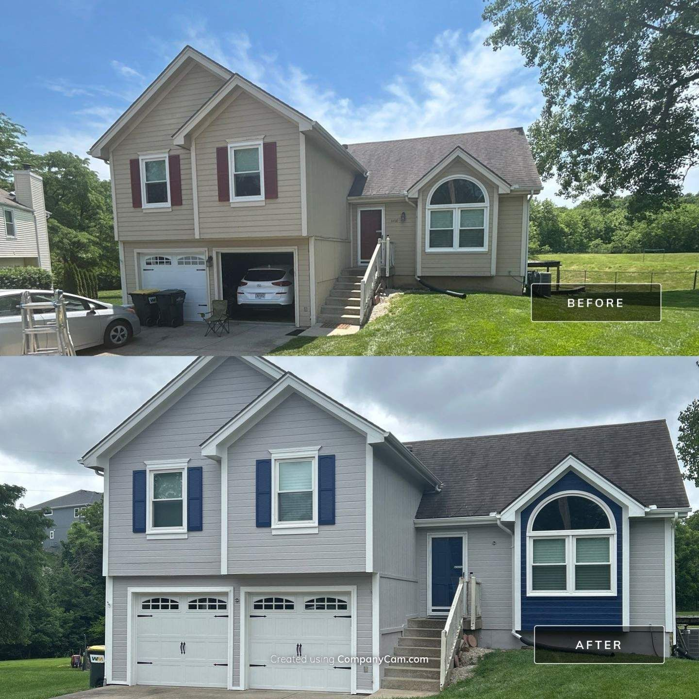

From Cedar Creek to Stonebridge, Olathe's neighborhoods are full of homes we've transformed — and your free estimate is minutes away.
Get Your Free EstimateOlathe is one of the fastest-growing cities in Kansas, and most of its housing stock was built in the same few decades — which means whole neighborhoods hit repaint age together. If your subdivision went up in the 90s or 2000s, odds are your hardboard siding is showing it: fading south walls, caulk pulling away at the seams, and bottom edges starting to swell.
That's exactly the kind of work we do every week. Hardboard and composite siding can last decades more — but only if failing spots are corrected before paint, not painted over. We scrape, sand, caulk every seam and nail hole with SherMAX, prime bare spots, and then paint — so the finish holds through Kansas summers.

Yes — Olathe is part of our core Johnson County service area, and we're based just up the road in Overland Park. Ethan can show you finished EverPro homes nearby during your estimate.
Absolutely. Many Olathe neighborhoods require exterior color approval — we'll help you build a palette that passes review and still transforms the house.
It depends on your home — size, stories, and surface condition matter far more than zip code. We give you a real number after a free walkthrough, and the number we quote is the number you pay.
All of it — from older neighborhoods near downtown to Cedar Creek, Stonebridge, Prairie Highlands, and everything in between, plus neighboring Gardner and Spring Hill.
Owner-led walkthrough, detailed written quote, a number that holds.
Request a Free EstimateOr call/text 913-210-1041